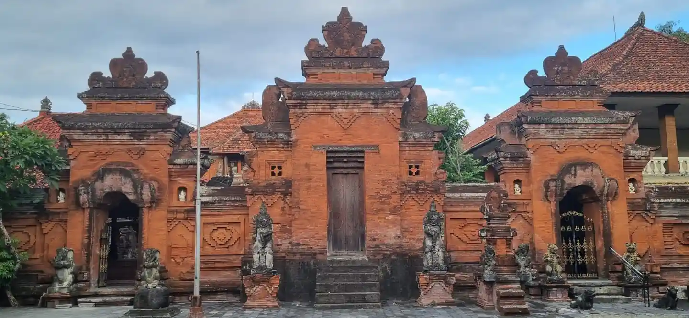
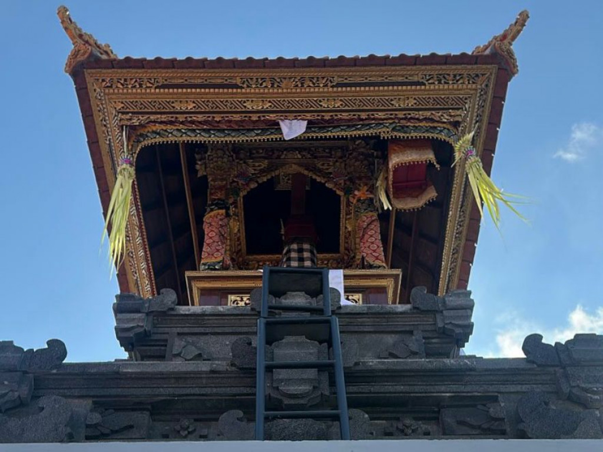
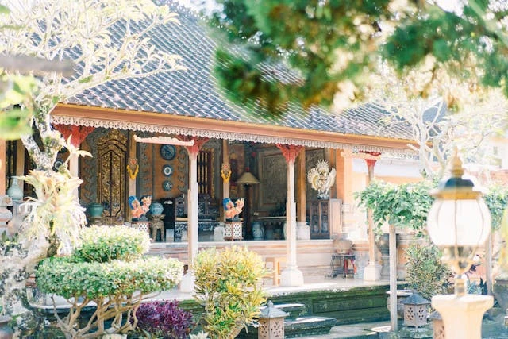
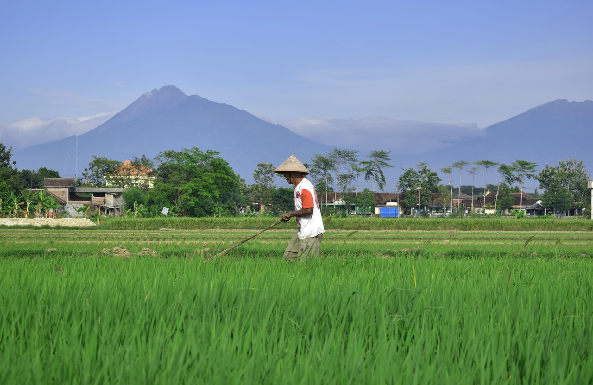
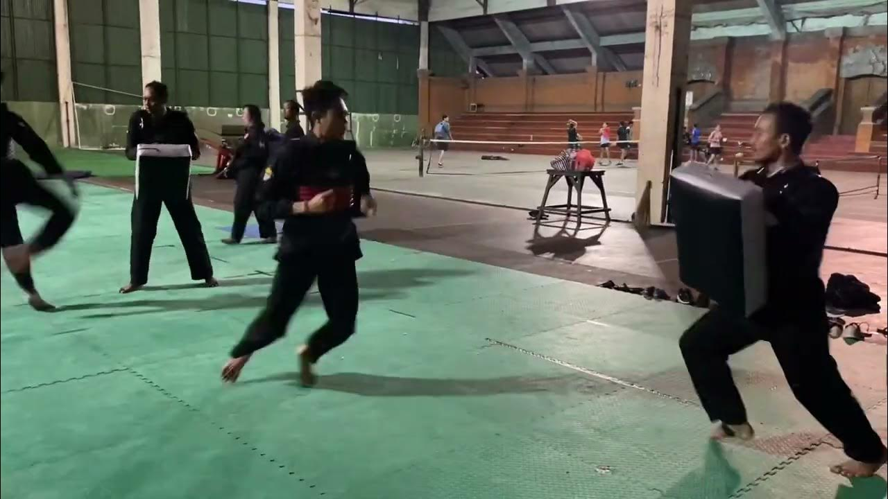
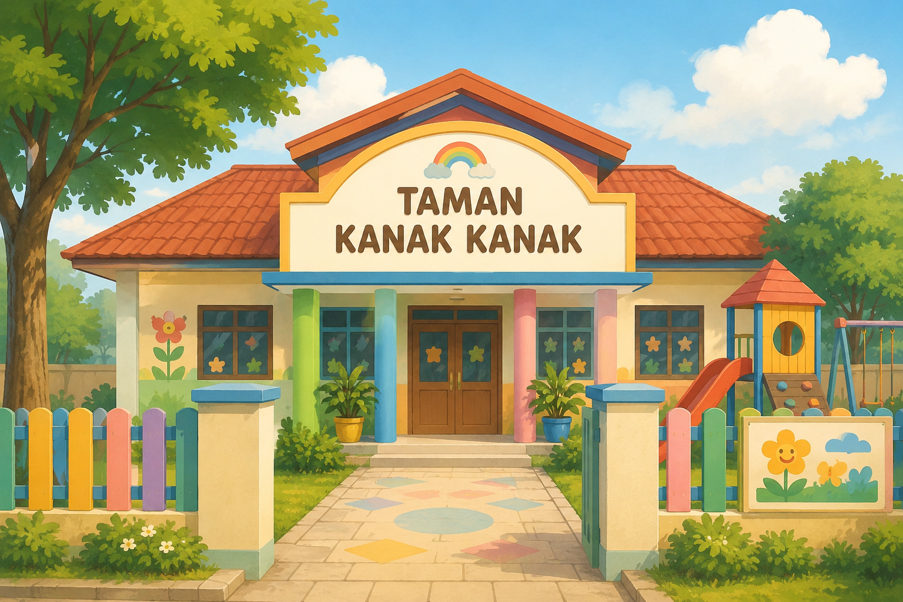

Banjar Kaliungu Kaja
( TH. 1936–2026 )
Pengantar
"Om Awignamastu Namo Siddham"
Banjar sebagai entitas sosial bermula dari adanya sekelompok orang yang ingin bergabung, bermusyawarah dan kemudian menata kehidupan sehari-harinya dalam sebuah komunitas. Tata kelola komunitas banjar di Bali merupakan salah satu komponen organisasi yang mengatur sistem komunikasi masyarakat secara terstruktur dan terhubung dalam sistem administrasi lintas sektoral berdasarkan ketentuan hukum adat maupun hukum nasional. Dalam sistem kenegaraan di Republik Indonesia, organisasi banjar merupakan struktur terbawah dalam sistem pemeritahan desa, terutama dalam memenuhi hak dan kewajiban warga yang dikenal sebagai krama banjar.
Tata-ruang Banjar Kaliungu Kaja merupakan satu kesatuan wilayah pemukiman dengan batas-batas tertentu yang diwariskan secara turun temurun dan dikuatkan dengan hak kepemilikan krama banjar. Banjar merupakan episentrum dengan struktur mandala yang terdiri dari: utama mandala, madya mandala, nista mandala dan memiliki catuspata sebagai titik nol (pusat) untuk melaksanakan berbagai ritual keagamaan, kegiatan budaya dan aktivitas sosial lainnya berlandaskan Agama Hindu Bali.
Visi Banjar Kaliungu Kaja bepedoman pada falsafah Tri Hita Karana yaitu: 1) hubungan harmonis antara manusia dengan Hyang Widhi Wasa; 2) hubungan harmonnis antara manusia dengan manusia; dan 3) hubugan harmonis antara manusia dengan alam dan ligkungannya. Misi Banjar Kaliungu Kaja bertujuan untuk mewujudkan sukertha tata pakraman berdasarkan: 1) tata Perhyangan, kewajiban merawat keyakinan beragama Hindu Bali; 2) tata Palemahan, kewajiban menjaga keharmoisan alam semesta dan tertib lingkungan; serta 3) tata Pawongan, tertib dalam melaksanakan kewajiban sosial dan kependudukan.
Pada awal mendirikan komuitas ini para sesepuh pendiri banjar memiliki cita- cita mulia yang diperjuangkan dengan penuh pengorbanan sehingga gagasan, tatanan, dan nilai-nilai yang mereka perjuangkan kini menjadi warisan yang terus tumbuh dan bergerak mengikuti perubahan zaman. Gagasan, cita-cita, nilai luhur yang kini kita warisi sebagai komunitas bebanjaran sudah sepatutnya di kenang, ditelusuri dan digali iformasinya untuk mengetahui kapan, bagaimana, dan siapa yang berperan saat itu.
Wacana untuk mengungkap sejarah banjar semakin mengemuka setelah warga bajar Kaliungu Kaja berhasil menyusun Awig-Awig Banjar pada tahun 1913. Dokumen awig-awig ini dipandang kurang lengkap tanpa adanya keterangan tentang sejarah banjar. Bertahun-tahun kita tidak memiliki catatan tentang sesepuh banjar, tidak ada catatan tentang perkembangan banjar sehigga menyusun sejarah banjar menjadi penting dengan beberapa alasan antara lain: 1) ingin mengetahui kapan banjar ini berdiri dan siapa saja tokoh-tokoh yang berperan pada saat itu; 2) ingin mengetahui lini-masa dan hal-hal penting terkait dengan perkembangan banjar; dan 3) memiliki dokumen yang berguna bagi generasi penerus untuk menjaga keberlanjutan komunitas dan kehidupan sosial warga banjar di masa yag akan datang.
Setelah melewati masa yang cukup panjang rencana ini belum terealisasi tanpa ada yang memulai. Upaya yang lebih serius baru muncul setelah dibentuk tim penyusun yang secara efektif baru bekerja dari tahun 2023. Tim penyusun menyadari minimnya informasi, dokumen dan data-data yang dapat dijadikan rujukan. Namun demikian melalui wawancara langsung dengan sesepuh banjar lintas generasi dapat digali informasi serta pengalaman-pengalaman menarik tentang suasana agraris, kehidupan bergotong-royong, dan tradisi-tradisi yag mereka lakukan di masa lalu.
Secara historis Banjar Kaliungu Kaja memiliki warisan baik yang bersifat fisik (tangible) maupun non fisik (intangible). Data-data fisik tersebut antara lain: perhyangan, bangunan balai banjar, balai kulkul, peralatan maebat-ebatan, lesung batu, gamelan, foto-foto dan benda-benda manifes lainnya. Sedangkan warisan non fisik merupakan pengalaman, ceritra lisan, kisah-kisah babad tentang masa lalu. Benda-benda manifes dan kisah masa lalu dari sesepuh banjar mejadi petujuk penting untuk dicatat dan dirangkai menjadi dokumen sejarah.
Syukur kisah-kisah tentang bangunan balai banjar, dan ceritra lisan masa lalu tersebut dapat diperoleh dari para sepuh, khususnya para sepuh kelahiran tahun 1940 - 1950. Pengalaman dan ingatan mereka tentang bangunan-bangunan yang sudah ada, dokumen foto-foto hitam putih, suasana kehidupan agraris, dan posisi balai banjar mejadi ceritra yang menarik. Keterangan tentang foto hitam putih yang mereka ketahui terpajang di balai limas Timur mengabadikan orang tua, para remaja dan anak-anak berbusana adat dan pada umumnya tidak mengenakan baju. Namun sayang foto-foto dokumenter tersebut hilang tanpa bekas dan tidak diketahui keberadannya saat ini.
Sejarah

Sejauh ini penelusuran kosa kata "kaliungu" ditemukan pada tulisan kronik sejarah babad Mengwi (circa: 1836). Di dalam kronik babad tersebut dijelaskan terjadinya perang antara Kerajaan Mengwi dengan Kerajaan Badung. Raja Mengwi dibantu oleh pasukan goak dari kerajaan Buleleng untuk menghadapi pasukan sikep dari kerajaan Badung. Pada saat perang berkecamuk pasukan sikep Badung sempat mengalami tekanan dan terdesak ke arah Tenggara mendekati Puri Pemecutan Badung. Melihat situasi tersebut, Raja Badung I Gusti Ngurah Pemecutan langsung turun tangan dan memberi komando kepada pasukan sikep Badung untuk berbalik menyerang menggunakan sejata tajam dan endut (lumpur) yang dilemparkan ke arah mata pasukan goak. Pertempuran kembali bergolak dan menimbulkan banyak korban di kedua belah pihak.
Tumpahan darah prajurit-prajurit yang gugur saat itu mengalir dan bercampur dengan lumpur di parit-parit sawah, sehingga menyebabkan air di parit-parit sawah berwarna biru keunguan. Air sawah yang bercampur dengan darah berwarna Ungu itulah yang kemudian disebut “kaliungu”. Kaliungu terdiri dari kata "kali" (=got/parit) dan "ungu" (=warna air bercampur darah). Peristiwa ini dikenang sebagai peristiwa heroik pasca perang pasukan sikep Badung melawan pasukan goak Buleleng. Lokasi perang dahasyat tersebut terjadi di sebelah Timur Laut Puri Pemecutan yang kemudian diabadikan menjadi nama banjar Taensiat. Sedangkan wilayah pada saat Raja Pemecutan memberi perintah kepada pasukan sikep Badung agar berbalik menyerang pasukan goak disebut “tapak wangsul” yang kemudian menjadi nama banjar Tampak Gangsul. Demikian pula kata "kaliungu" diabadikan untuk mengenang peristiwa heroik pasca perang pasukan sikep Badung melawan pasukan goak Buleleng menjadi nama banjar Kaliugu Kaja. (Dihimpun dari beberapa sumber).

Secara faktual tidak diketahui kapan para sesepuh banjar mulai membangun balai banjar. Dari keterangan para sepuh diperoleh informasi bahwa pada dinding lantai bangunan limas sebelah Timur Balai Panjangpernah ditemukan tulisan angka tahun “1936”. Catatan angka tahun tersebut dapat dimaknai sebagai peristiwa bersejarah saat bangunan limas anyar tersebut diresmikan. Memori tentang angka tahun "1936" dan foto-foto hitam putih merupakan cacatan penting sebagai penanda sejarah ketika bangunan limas Timur tersebut diresmikan dengan upacara melaspas.
Temuan angka tahun "1936" pada bangunan limas tersebut memang tidak terkait secara langsung dengan peristiwa babadKerajaan Mengwi yang terjadi seratus tahun sebelumnya. Namun catatan angka tahun ini menjadi peringatan ketika balai limas tersebut diresmikan dengan upacara melaspas. Sangat mungkin upacara pamelaspas bangunan limas baru pada
tahun 1936 tersebut dirangkai dengan Upacara Piodalan Banjar yang dirayakan setiap hari Purnama Kedasa. Menurut almanak wariga (perhitungan kalender Bali), peristiwa piodalan yang disertai pamelaspas balai limas anyar di tahun 1936 itu jatuh pada tanggal 6 April 1936.
Setelah dibahas pada peruman bajar, maka iterpretasi makna angka tahun "1936" yang terpahat pada dinding bantaran balai limas tersebut merupakan cacatan sejarah terkait dengan upacara melaspas bangunan limas yang dirangkai dengan piodalan di perhyanga Banjar yang dirayakan setahun sekali pada hari Purnama Kedasa. Atas dasar kesepakatan tersebut krama banjar menetapkan tahun 1936 sebagai tonggak sejarah tertatanya Sukertha Tata Pakraman di Banjar Kaliungu Kaja.
Data fisik yang menjadi ciri awal berdirinya banjar adalah adanya bangunan Bale Panjang. Pada sisi Utara terdapat gedong tempat menyimpan perangkat kelengkapan banjar. Dari keterangan para sepuh terungkap bahwa, setidaknya ada 4 (empat) komponen bangunan yang sudah dibangun sebelum tahun 1936 yaitu: 1) Bale Panjang, Perhyangan Banjar, Bale Kulkul dan Puwaregan (dapur). Sedanngkan balai Limas Timur merupakan bangunan baru yang dipelaspas pada tahun 1936. Jadi dapat dipastikan bahwa sebelumnnya sudah ada beberapa bangunan balai-balai yang diperkirakan sudah dibagun mulai sejak awal tahun 1930-an.

Berdirinya Banjar Kaliungu Kaja tidak dapat dipisahkan dengan keberadaan Puri Jero Gede Kaliungu Kaja. Tata ruang dan bangunan balai banjar menggunakan tanah duwe yang dihibahkan menjadi milik krama Banjar Kaliungu Kaja. Pangelingsir Puri, Anak Agung Made Regig adalah tokoh yang berjasa mengawali terbentuknya banjar Kaliungu Kaja. Beliaulah cikal bakal kepemimpinan yang memprakarsai pembanguan balai banjar bersama tokoh- tokoh lainnya. Hal ini menjadi catatan penting karena sampai sekarang ikatan prakanti antara warga banjar dengan keluarga Jero Gede Kaliunngu Kaja masih berlajut dan terbina dengan baik. Sebuah tradisi yang menandai hubungan historis tersebut adalah kewenangan pihak Jro Gede Kaliungu Kaja membunyikan Kulkul (nepak kulkul) banjar pada saat menyelenggarakan upacara agama maupun upacara adat. Tradisi ini menjadi bukti bahwa sampai sekarang di Jero Gede Kaliungu tidak memiliki bangunan bale kulkul seperti lazimnya puri-puri yang lain.
Anggota yang menjadi warga Banjar Kaliunngu Kaja terdiri dari anggota banjar wed (asli) dan warga tamiu (pendatang). Dari ratusan jumlah kepala keluarga (KK) yang ada saat ini penempatannya sudah maksimal dan tidak mungkin untuk dikembangkan sebagai wilayah pemukiman walaupun jumlah KKnya masih bisa bertambah. Secara turun-temurun keanggotaan warga dapat dikelompokkan berdasarkan penggunaan kuburan (setra paosan). Kelompok tersebut terdiri dari warga yang menyungsung Khayangan Dalem Tungkub, warga yang menyungsung Khayangan Dalem Pande, dan warga yang menyungsung Khayangan Dalem Denpasar. Pengelompokkan ini terkait dengan tradisi penggunaan setra (kuburan) ketika ada warga yang meninggal dunia.
LINI MASA BANJAR KALIUNGU KAJA
Lokasi bale banjar membujur dari utara ke selatan terhubung dengan catus pata (perempatan jalan) sebagai episentrum tata pakraman. Susunan bangunannya terdiri dari: 1) utama mandala, di bagian hulu kaja kangin sebagai tempat suci; 2) madya mandala, merupakan balai panjang (bale los berbentuk limas) beratap genteng dengan tiang penyangga dari kayu balok yang cukup besar. Pada sisi utara Bale panjang digunakan sebagai ruang penyimpanan dengan pintu dan jendela menghadap ke selatan. Selebihnya merupakan ruang terbuka yang berfunngsi sebagai tempat melaksanakan berbagai kegiatan pakraman. Pada sudut kelod-kangin bale panjang dibangun bale kulkul, dan pada sisi Barat digunakan sebagai dapur, sumur, dan kamar mandi; 3) nista mandala, adalah ruang terbuka di sebelah timur dan selatan bale panjang sebagai halaman bale banjar.
Bale-bale tersebut di atas diperkirakan sudah dibangunan di awal tahun 1930- an. Berikutnya pada ruang terbuka diantara perhyangan banjar dan bale kulkul dibangun sebuah bale limas yang lebih kecil beratap ambengan (alang-alang). Bangunan limas ini bertiang delapan dengan bantaran lantai setinggi 60 cm. Bangunan limas ini difungsikan sebagai tempat untuk menggelar paruman banjar dan aktivitas lainnya. Temuan angka tahun "1936" pada dinding balai limas dan beberapa foto hitam putih yang pernah dipajang disana menunjukkan bahwa kemungkinan Banjar Kaliungu Kaja sudah berdiri sebelum tahun 1936. Namun karena tidak adanya data yang pasti, maka momentum Piodalan Purama Kedasa, 6 April 1936 disepakati sebagai momentum sejarah berdirinya Banjar Kaliungu Kaja.

Sejauh ini susunan prajuru yang memimpin Banjar Kaliungu Kaja hanya dapat ditelusuri sampai pada masa prajuru tahun 1930-an. Peran pangelingsir Jero Gede Kaliungu Kaja dan nama-nama seperti Anak Agung Made Regig, Kakiang Kebon, Batan Entog, diperkirakan merupakan prajuru angkatan pertama yang mengawali berdirinya Banjar Kaliungu Kaja. Berikutnya pada periode 1940 - 1950-an, I Gusti Putu Rai Tokir, I Nyoman Ceteg, Kakiang Kebon, I Ketut Geria disebut sebagai prajuru yang meneruskan kepemimpinan prajuru sebelumnya.
Pada masa ini semangat bergotong royong dan suasana pedesaan mewarnai kehidupan krama banjar. Aktivitas sehari-hari berjalan dengan damai dan saling membantu dalam suka maupun duka. Mata pencaharian warga pada umumnya bertani, berkebun dan berdagang. Penghasilan banjar pada saat itu sangat tergantung dari hasil gotong royong sepert membantu warga pada saat memula (menanam padi) sampai manyi (memanen padi) dan hasil dari jasa pasukadukaan tersebut diimbangi dengan mendapatkan sebagian hasil pertanian.

I Gusti Putu Rai Tokir juga dikenal sebagai pendekar silat, pendiri Perguruan Silat Bhakti Negara di Bajar Kaliungu Kaja pada tahun 1955. Sebagai pedekar silat beliau disegani di wilayah Kabupaten Badung dan sekitarnya. Pada masa kepemimpinan beliau Bajar Kaliungu Kaja sering menggelar tajen (arena sabungan ayam) sebagai upaya penggalian dana untuk meringankan beban warga pada saat membiayai upacara adat, agama, termasuk pendanaan untuk membangun balai banjar.

Setelah I Gusti Putu Rai Tokir, pergantian prajuru berikutnya terjadi pasca peristiwa G 30 S PKI, tahun 1965. Saat itu terjadi perubahan administratif yang memisahkan struktur Kelian Adat dan Kelian Dinas. Pada masa 1970 s/d 1980- an juga ditadai dengan perubahan struktur desa sebagai akibat diudangkannya UU No.5 Tahun 1979 tentang Pemerintahan Desa sehingga berakibat pada pemekaran wilayah desa dan Banjar Kaliugu Kaja disebut sebagai salah satu banjar yang berada di bawah koordinasi Kepala Desa Dangin Puri.
I Gusti Putu Alit menjabat Kelian Adat bersama dengan Sang Ketut Tantra sebagai Kelian Dinas pada periode 1967 - 1987. Kepemimpinan I Gusti Putu Alit dibantu 4 (empat) Kelian Tempekan yaitu: I Nyoman Gebiyuh, I Ketut Sudhita (mengalami pergantian waktu digantikan olehI Wayan Darya), I Nyoman Ranja dan I Gusti Kompyang Bedi (mengalami pergantian waktu digantikan oleh I Nyoman Losen). Sebagai Penyarikan Banjar pada waktu itu adalah Bagus Ketut Lodji dan Patengen Banjar I Wayan Pica. Pada masa akhir kepemimpinannya I Gusti Putu Alit membuat aturan baru tentang masa bhakti prajuru. Ketetapan tersebut mengatur pergantian prajuru banjar melalui sistem pemilihan dan dilakukan setiap 10 (sepuluh) putaran Galungan sehingga masa bhakti setiap prajuru akan berlangsung kurang lebih selama 5 (lima) tahun.
Di masa kepemimpinan I Gusti Putu Alit terjadi renovasi bangunan Bale Banjar secara signifikan. Bangunan perhyangan, bale kulkul, bale panjang, gedong penyimpanan yang sudah rapuh mengalami perbaikan. Demikian pula posisi bangunan mengalami perombakan. Pada saat itu I Nyoman Gebiyuh yang juga dikenal sebagai seorang undagi ditugaskan menjadi kepala tukang untuk melakukan perombakan bangunan. Bangunan bale kulkul posisinya diangkat dan berada di sisi selatan bale panjang. Di samping mengemban tugas sebagai Kelian Tempekan, I Nyoman Gebiyuh merancang perombakan besar-besaran sehingga menghasilkan bentuk dan posisi bangunan seperti yang ada sekarang.
Pada saat itu area perhyangan banjar perlu sedikit perluas ke arah utara sehingga melewati tanah milik I Koncong. Dengan pendekatan kekeluargaan antara prejuru dengan keluarga ahli waris, tanah tersebut kemudian disumbangkan secara sukarela oleh pemiliknya. Bale limas timur yang mulai rapuh dipindahkan ke tanah duwe Jero Gede di selatan banjar. Proses pemidahannya dikerjakan secara gotong royong oleh warga banjar. Tanpa membongkar bangunan, limas tersebut dipidahkan secara utuh degan menggunakan sistem prantos, yaitu palang-palang bambu yag diikat pada saka (tiang-tiang) limas dan dipikul beramai-ramai menuju tempat yag telah diasiapkan di selatan balai bajar. Berikutnya pada bagian utara bale panjang yang semula hanya berfungsi sebagai gedong penyimpanan, dikembangkan menjadi panggung dengan hiasan pintu dan jendela berukir yang masih utuh sampai sekarang. Saka-saka kayu diganti dengan pilar beton, membuat tembok pembatas dapur dan kamar mandi, membuat kantor kelian Dinas, serta pemasangan tegel pada lantai bale panjang.
Ada peristiwa penting diawal renovasi perhyanngan banjar. Peristiwa tersebut terkait dengan unen-unen, berupa benda sakral gelungan penari Gandrung dan tapakan barong Bangkal yang dulu distanakan di perhyangan banjar. Ketika perombakan perhyangan dilakukan, unen-unen sakral tersebut dipindahkan ke mrajan pribadi milik Sang Ketut Tantra, Kelian Dinas saat itu. Peristiwa ini dianggap penting karena berdampak pada peristiwa lain pada masa prajuru banjar berikutnya.
Pada medio pertengahan tahun 1970-an I Gusti Putu Alit memprakarsai berdirinya Sekolah Taman Kanak-Kanak (TK) Marhaen. Sekolah TK ini dibangun di sebalah selatan jalan yang juga menjadi milik Jero Gede Kaliungu Kaja. Pada dinding depan bangunan TK terdapat hiasan simbol segi tiga berkepala banteng (simbol Partai Nasional Indonnesia, PNI) terbuat berbahan batu padas. Pada sudut depan sebelah kiri dilengkapi dengan sebuah bale bengong. Penyusun pernah melihat beberapa foto banjar terpajang di sekolah tersebut.
Pergantian prajuru berikutya, periode 1987 - 1997, I Gusti Ketut Ngurah Suryana diagkat menjadi Kelian Adat bersama-sama dengan I Gusti Kompyang Parsua sebagai Kelian Dinas. Kelian Tempekan pada saat itu I Gusti Made Budawan, I Made Dana, I Made Sudha Wirana, dan I Wayan Sudana. Penyarikan Banjar pada saat itu adalah Bagus Putu Udiyana dan Petengen Banjar Sang Putu Sukadana.
Pada masa kepemimpinan I Gusti Ketut Ngurah Suryana terjadi perubahan status Sekolah Taman Kanak-Kanak (TK) Marhaen yang diwariskan dari prajuru sebelumnya. TK Marhaen dirubah statusnya menjadi Taman Kanak- Kanak (TK) Handayani, yang dikelola Yayasan Pedidikan TK dan ketuanya Ir. Bagus Ketut Lodji. Pada masa prajuru ini juga mulai dirintis Sekaa Pesantian "Saraswati Dharma Gita" yang dipimpin oleh I Gusti Ketut Kaler Sutedja. Sampai di akhir masa jabatannya prajuru berhasil merenovasi atap genteng berbahan tanah dengan atap beton, merenovasi tembok penyengker dengan batu padas mulai dari sudut selatan perhyangan sampai ke ujung barat banjar.
Prajuru berikutnya masa bhakti 1997 - 2007 dipimpin oleh I Gusti Ketut Kaler Suteja sebagai Kelian Adat dan Kelian Dinas I Gusti Made Agung Pariatna. Kelian Tempekan pada saat itu I Nyoman Kesta, Sang Kompyang Adi, I Ketut Sukarta, I Nyoman Suntaya. Penyarikan I Wayan Ranten Arsana, Patengen Ida Bagus Wimba. Prajuru saat iru mengalami pergantian antar waktu karena Kelian Tempeka I Nyoman Kesta meninggal dunia dan digantikan oleh I Ketut Sarjana, dan Patengen Ida Bagus Wimba meniggal dunia dan digantikan oleh I Ketut Astana.
Pencapaian penting pada periode ini adalah merenovasi palinggih Bhagawan Penyarikan dan Palinggih Tajuk. Kedua palinggih tersebut semula dibuat dari batu bata diganti dengan bahan batu selem (hitam) termasuk memperbaharui candi bentar dan tembok penyengker perhyangan semuanya megguakan batu hitam. Setelah seluruh pekerjaan renovasi selesai, bangunan palinggih tersebut kemudian diplaspas pada tanggal 18 Desember 1999, dipuput oleh Ida Pedanda Gde Sidemen dari Geriya Sinduwati, Sidemen Karangasem. Setelah upacara pemelaspas perhyangan banjar, dilanjutkan dengan melaksanakan upacara Odalan Madudus Agung dan Mendem Pedagingan pada Purnama kedasa, tanggal 18 April 2000.
Peristiwa penting lainnya yang perlu dicatat pada masa prejuru I Gusti Ketut Kaler Sutedja adalah melaksanakan upacara pralina unen-unen sakral. Seperti telah disebut sebelumnya, unen-unen tersebut cukup lama ditempatkan di mrajan milik Sang Ketut Tantra. Sepanjang masa itu warga banjar tidak pernah melakukan kewajiban apapun dan sudah melupakan keberadaannya. Upaya untuk mengembalikan unen-unen tersebut ke banjar beberapa kali mendapat penolakan warga bajar. Setelah melewati dua periode pergantian prajuru (sekitar 20 tahunan) akhirnya prajuru dan warga banjar sepakat untuk memprelina benda sakral tersebut dengan upacara tebasan prelina (dibakar) dan abunya dilarung ke pasih Padang Galak Sanur. Pelaksanaan dan seluruh biaya upacara ditanggung oleh banjar.
Seiring benjalannya waktu dan adanya usul dari krama banjar, status kepemilikan tanah banjar perlu disertifikasi. Atas kesepakatan warga banjar prajuru saat itu kemudian mengajukan permohonan sertifikat tanah ke Badan Pertanahan Nasional (BPN). Setelah diproses di Badan Pertanahan Kota Denpasar, maka terbitlah Sertifikat No. 2035 tertanggal 28 Desember 2004.
Sebagai kelengkapan Jaga Baya di Desa, beberapa krama banjar ditunjuk untuk bergabung menjadi tenaga HANSIP yang ditugaskan sebagai penjaga ketertiban lingkungan di desa maupun di lingkungan banjar masing-masing. Seiring dengan kebutuhan ketertiban lingkungan banjar kemudian dibentuk organisasi Pecalang Banjar. Pecalang Banjar Kaliungu Kaja dibentuk pada masa Prajuru I Gusti Ketut Kaler Sutedja, tepatnya pada Paruman Agung Banjar tanggal 20 Nopember 2002, setelah terjadinya Bom Bali. Berturut turut kepengurusan Pecalang diketuai oleh: I Gusti Made Raka Arnaya (2002 - 2007). berikutnya I Gusti Putu Ari mantara (2007 - 2017), dilanjutkan oleh Sang Putu Gede Dharma Ariawan (2017 - 2022), dan yang sekarang diketuai oleh I Made Mudarta (2022 - 2027).
Prajuru berikutnya masa bhakti 2007 - 2017 dipimpin oleh I Gusti Ketut Rai Mataram sebagai Kelian Adat bersama dengan Anak Agung Raka Arnaya sebagai Kelian Dinas. Kelian Tempekan terdiri dari: I Nyoman Sukarya, Ketut Gede Arnata, I Ketut Jiwan, dan I Nyoman Suirnasa. Penyarikan pada waktu itu I Nyoman Astita dan sebagai Patengen I Gusti Ketut Adnyana.
Pada periode ini kembali dilakukan perombakan balai panjang bagian tengah dengan membuat dak lantai 2 untuk sekolah Taman Kanak-Kanak. Panggung dan tembok penyengker juga direnovasi menggunakan batu bata merah. Penggalian dana untuk membangun pada saat itu cukup sulit karena tajen sudah dilarang oleh pemerintah. Namun dengan semangat yang tinggi kesulitan tersebut dapat diatasi dengan menyelenggarakan bazar, memungut sumbangan sukarela, menyebar kupon berhadiah dan mohon sumbangan dari pemerintah.
Pencapaian penting pada periode 2007 - 2017 adalah penyusunan Awig-Awig Banjar. Awig-Awig dan Panepas Awig-Awig tersebut ditulis diatas daun lontar beraksara Bali. Upacara Pasupati Awig-Awig dilaksanakan pada Sukra Pon, Julungwangi, Sasih Kapat, 11 Oktober 2013, dipuput oleh Ida Pedanda Putra Dalem Keniten dari Geriya Sigaran Badung. Awig-Awig yang sudah dipasupati kini menjadi benda sakral yang dikramatkan oleh krama banjar. Awig-Awig dan Penepas Awig-Awig ini juga dicetak dalam betuk buku hijau dan wajib dimiliki oleh setiap kepala keluarga (KK) Banjar Kaliungu Kaja. Buku yang dicetak tersebut menggunakan dwi bahasa yaitu: bahasa Bali dan bahasa Indonesia serta formatnya menyandingkan aksara Bali dengan huruf latin. Berikutnya prajuru periode ini juga melaksanakan upacara pasupati Kulkul Gede karena Kulkul yang lama pecah dan suaranya kurang bagus.
Prajuru masa bhakti 2017 - 2022 dipimpin oleh I I Gusti Ketut Dharma Wijaya sebagai Kelian Adat bersama dengan I Gusti Made Apri Aditya sebagai Kelian Dinas. Kelian Tempekan terdiri dari: I Putu Krisnadi, I Ketut Sumatra, I Gusti Putu Ariawan dan I Made Mudarta. Penyarikan banjar pada masa bhakti ini adalah Anak Agung Djaja Baruna, dan Patengen Sang Kompyang Rai Sucita. Pencapaian pada periode ini berhasil merenovasi pilar-pilar bale panjang dengan hiasan batu merah termasuk hiasan pelengkungan dan hiasan Bale Kulkul. Prajuru periode ini melaksanakan tugasnya dalam satu periode saja, kurang lebih selama lima tahun.
Setelah memalui pemilihan prajuru masa bhakti 2022 - 2027 dipimpin oleh Anak Agung Surya Wibawa sebagai Kelian Adat bersama dengan I Gusti Made Apri Aditya sebagai Kelian Dinas. Kelian Tempekan: I Gusti Putu Alit Astika, Kadek Alit Wardika, Kadek Sukayasa, I Komang Indrayana. Sebagai Penyarikan I Gusti Putu Arimantara dan Patengen Kade Indah Baswara.
Masalah keuangan banjar pada masa ini menjadi lebih baik karena adanya kucuran Dana Desa oleh pemerintah memalui administrasi pemerintahan desa. Dengan mengajukan proposal ke Kepada Desa Dangin Puri Kaja dan ditetapkan dalam rapat-rapat Badan Keuangan Desa (BKD) maka setiap tahun banjar mendapat kucuran dana untuk pembangunan fisik mapun dana penunjang kegiatan upacara dari Pemeritah Desa.
Yayasam dam Sekaa-sekaa
Pasca peristiwa G 30 S PKI, Banjar Kaliungu Kaja mendirikan sekolah usia dini yang diberi nama Taman Kanak-Kanak (TK) Marhaen. Tujuan pendirian TK ini adalah untuk menyiapkan sarana pendidikan usia dini bagi anak-anak warga banjar. Seiring dengan perkembangan jaman TK Marhaen kemudian ditingkatkan statusnya menjadi TK Handayani yang dkelola oleh Yayasan Taman Kanak-Kanak Banjar Kaliungu Kaja. yang saat itu dipimpin oleh Bagus Ketut Lodji. Peningkatan status ini berkaitan dengan arahan pemerintah sebagai pembina sekolah-sekolah TK di Kota Denpasar. TK Handyani adalah sekolah swasta yang setara dengan sekolah TK yang lain.

Menurut cerita-cerita sesepuh banjar, di Kaliungu Kaja pernah ada kesenian Gandrung, yang diperkirakan sudah beraktivitas sejak tahun 1950-an. Seperti halnya di banjar-banjar tetangga, warga banjar memanfaatkan waktu senja dengan bermain gamelan dan menari gandrung yang populer saat itu. Selain sekaa gandrung, ketika menyambut hari raya Galungan dan Kuningan anak- anak berkumpul di banjar untuk melakukan kegiatan ngelawang dengan sarana Barong Bangkal. Bermula dari kelompok warga yang terhimpun dalam sekaa gandrung dan anak-anak ngelawang tersebut kemudian mewariskan tetamian (benda sakral) berbentuk gelungan penari gandrung dan tapel Barong sebagai "unen-unen" yang disungsung di perhyangan banjar.
Geliat berkesenian rupanya tidak pernah padam di banjar Kaliungu Kaja. Setelah redupnya kesenian Gandrung berikutnnya muncul Sekaa Gong. pada tahun 1966. Pembentukan Sekaa Gong ini diprakarsai oleh I Nyoman Gebiyuh setelah menerima satu barung gamelan Gong Kebyar dari A.A. Gede Djaja Negara. Gamelan ini awalnya adalah milik I Gusti Ngurah Panji Tisna dari Puri Jelantik di Buleleng. Pihak Puri Jelantik menghibahkan gamelan tersbut kepada A.A. Gede Djaja sebagai transaksi tukar guling atas pekerjaan renovasi bangunan Puri Jelantik saat itu. Gamelan tersebut kemudian diboyong ke Badung pada tahun 1965. Gamelan tersebut kemudian dihibahkan kepada banjar yang kemudian membentuk Sekaa Gong Kalingga Jaya pada tahun 1966. Semua upaya tersebut diprakarsai oleh I Nyoman Gebiyuh termasuk melakukan pergantian bentuk pelawah gamelannya yang semula bergaya “bulelegan” kemudian menjadi gaya “bebadungan” pada tahun 1968.
Pada tahun 1995 Gamelan Gong Kebyar yang memiliki nilai historis dengan Puri Jelantik Buleleng ini dipinang oleh STSI Denpasar untuk dijadikan koleksi Museum Dokumentasi Gamelan di Kampus STSI Denpasar. Pihak STSI yang dimediasi oleh I Nyoman Astita (Dosen STSI) yang menjadi juga Ketua Sekaa Gong saat itu, melakukan pendekakatan dengan prajuru dan warga Banjar Kaliungu Kaja untuk mendapatkan persetujuan. Melalui negoisasi yang cukup panjang sekitar 3 (tiga) periode Galungan, akhirnya krama banjar sepakat menukar gamelan Gong Kebyar tersebut dengan Gamelan Semaradana yang disiapkan oleh STSI Denpasar seharga Rp. 30.000.000. Peresmian dan upacara melaspas Gamelan Semaradana dilaksanakan pada Saniscara Pon, Ugu, 9 Nopember 1996 sekaligus mengundang Listibiya Provinsi Bali untuk medapatkan Piagam Pramana Patram Budaya dan disaksikan Walikota Madya Denpasar, Bapak Drs. I Made Suwendha, Ketua DPRD Kota Madya Denpasar I Gusti Ngurah Parasu dan Seniman sepuh di Kota Denpasar.
Seperti yang telah disebut sebelumnya Sekaa Santhi "Gita Saraswati" sudah dirintis pada masa prajuru I Gusti Ngurah Suryana, di awal tahun 1990-an. Pembentukan dan pengorganisasian Sekaa Shanti ini diprakarsai oleh I Gusti Ketut Kaler Sutedja, yang kemudian menggantikan I Gusti Ngurah Suryana sebagai prajuru banjar. Prajuru memandang penting adanya Sekaa Shanti untuk menunjang pelaksanaan upacara-upacara di Banjar maupun upacara Panca Yadnya di lingkungan Banjar Kaliungu Kaja. Pengukuhan keberadaan Sekaa Shanti dirayakan dengan persembahyangann bersama sekaligus memperingati hari suci Saraswati.
Organisasi kepemudaan di Banjar Kaliungu terhimpunn dalam wadah Sekaa Teruna-Teruni (STT). Pada masa lalu STT tidak memiliki nama dan tidak diketahui kapan STT didirikan, namun belakangan ini STT Banjar Kaliunngu Kaja diberi nama STT Yowana Jaya. Atas arahan I Gusti Ketut Rai Mataram kemudian disarankan menetapkan hari jadi STT dengan mengambil momentum Peringatan Sumpah Pemuda (28 Oktobber). Sejak tahun 2010. STT Yowana Jaya merayakan Hari Ulang Tahun bersamaan dengan Hari Sumpah Pemuda. STT Yowana Jaya selalu dilibatkan pada kegiatan-kegiatan di banjar dan aktivitas STT Yowana Jaya yang menonnjol adalah membuat Ogoh-Ogoh untuk menyambut perayaan Ngerupuk menjelang perayaan hari Nepi.
Penutup
Puja puji syukur patut kita haturkan ke hadapan Ida Sang Hyag Widhi Wasa karena atas asung wara nugrahanya kita telah diberi tuntunan dalam menata kehidupan sosial budaya di banjar Kaliugu Kaja. Penghargaan yang setinggi- tigginya juga kita haturkan kepada para leluhur, sesepuh pediri banjar, yang telah dengan penuh pengorbanan menata kehidupan bermasyarakat yang guyub, aman dan sejahtra sehigga gagasan dan tatanan nilai yang mereka tanamkan kini menjadi warisan komunitas, seni dan budaya yang sangat bernilai bagi generasi penerus di masa medatang secara berkelajutan.
Demikian sekelumit tentang sejarah dan lini masa perkembanggan Banjar Kaliungu Kaja sampai saat ini. Buku kecil ini disampaikan serta mendapat pegesahan pada Paruman Agung Banjar, Redite Wage, Wuku Kuningan, Sasih Kedasa, 27 April 2025. Kami atas nama tim penyusun degan segala kerendahan hati menyampaikan rasa hormat serta permohonan maaf atas segala kekurangan dan keterbatasannya. Semoga buku kecil ini bermanfaat bagi para generasi penerus tata pakraman di Banjar Kaliungu Kaja.
Om, Shanti, Shanti, Shanti, Om.